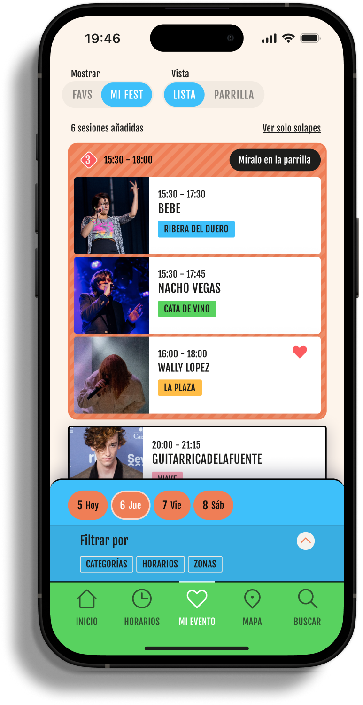
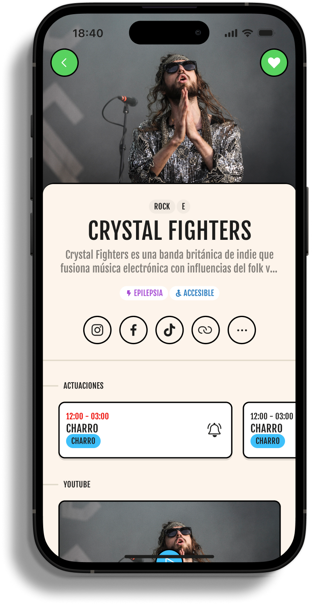
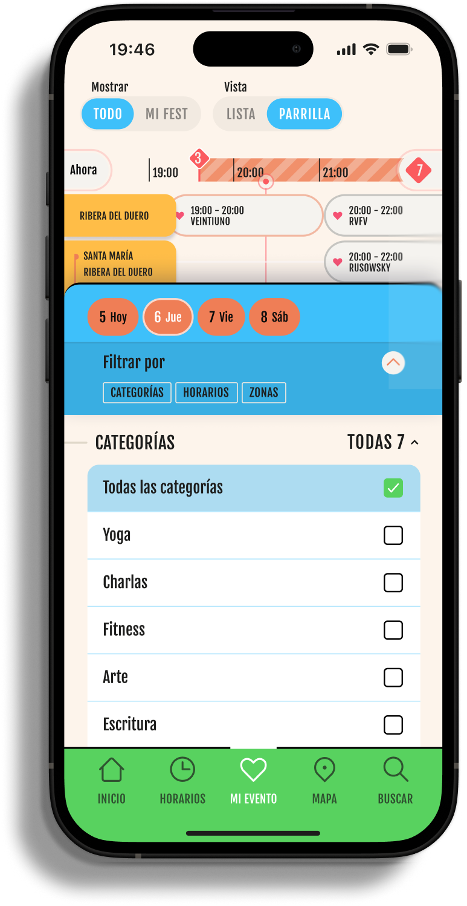

Un dashboard que cambia según la hora y el lugar, para que cada asistente vea lo relevante en cada momento del festival.
Mapa interactivo offlineRápido, con filtros y navegación sin cobertura.
Cartel y horariosLine-up completo con info y enlaces de cada artista.
Agenda personalFavoritos, recordatorios y avisos de solapamiento.
Búsqueda inteligentePuestos, artistas, servicios… al instante, offline.
Encuentra mi cocheGuarda dónde aparcaste o tu punto de encuentro.
Ayuda en emergenciaUbicación what3words y contactos para pedir ayuda.
Puestos y serviciosComida, barras, aseos y agua cercanos en el mapa.
NotificacionesCambios de horario y avisos que sí llegan.
Feedback in-appReportar incidencias sin pasar por redes sociales.
Home dinámicoLo que suena ahora y lo próximo
Mapa offlineEscenarios, comida y servicios
HorariosTodos los escenarios y franjas

Cartel por díaLine-up completo, día a día

Ficha de artistaBio, redes y actuaciones

FiltrosEncuentra justo lo que buscas